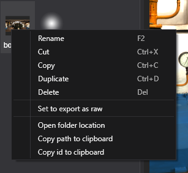
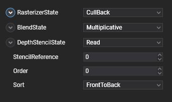
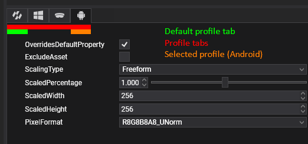

Edit assets
Evergine Studio offers the possibility of editing plenty of properties of every asset to fully customize the use of that asset into your app. Also, every Evergine project also defines a set of profiles, so you can also set different properties per profile.
Note
For example, we can halve the resolution of a texture for the Android or iOS profiles. Or sets a different PixelFormat.
Contextual Actions

We can apply some actions to the assets regardless its type. Right click to an asset in the Assets Details panel to show a contextual menu with the following actions:
- Rename the asset.
- Cut the asset (For cut/paste operation).
- Copy the asset (For copy/paste operation).
- Duplicate will create an exact copy of the asset but with different Id.
- Delete asset.
- Set to export as raw copies to the Export Content Folder the resource file instead the compiled exported version.
- Open folder location will open the File explorer in the same location of the asset.
- Copy path to clipboard. Copies the path of the asset metafile.
- Copy id to clipboard.
Assets Editor
To edit an asset:
- Click on it in the Assets Details panel.
- A new panel will be opened, specific for that asset.

Every Asset editor panel is different, but some of the most common areas are the next ones:
- Asset viewer area.
- Global properties panel.
- Profile properties panel(s).

Viewer area
Usually the viewer area of the asset will show a visual representation of the asset. It's also common to have some sort of controls to change the visualization settings. Some examples are:
- Enabling / disabling Texture channels.
- Selecting the Level of Mipmap of a Texture.
- Play/Pause a Model animation.
- Set the geometry where a Material is applied.
Global properties
Usually the global properties are the one that applies for all the Project profiles. Next image shows the Render Layer parameters:

Profile properties
Present in many assets there is a Profile parameters area where users can customize properties per profile. Usually this area is similar to this:

This area shows:
- Profile tabs:
 It shows the default profile tab and one tab per Project profile. Allows to switch to a specific profile property panel.
It shows the default profile tab and one tab per Project profile. Allows to switch to a specific profile property panel. - Default profile:
 Sets the profile properties by default when no other profile is specified.
Sets the profile properties by default when no other profile is specified. - Override Default Property: When enabled, it enables the custom properties of this profile. If disabled, the default profile will be used.
- Exclude Asset: Property that allows an asset not to be exported in a specific profile, hence making it only available in some of the profiles.